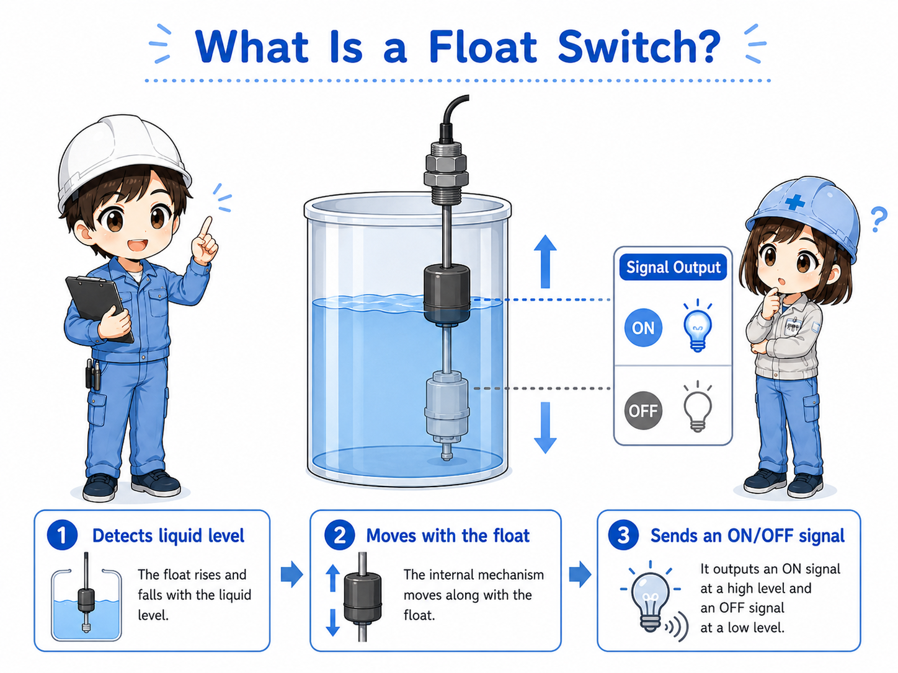
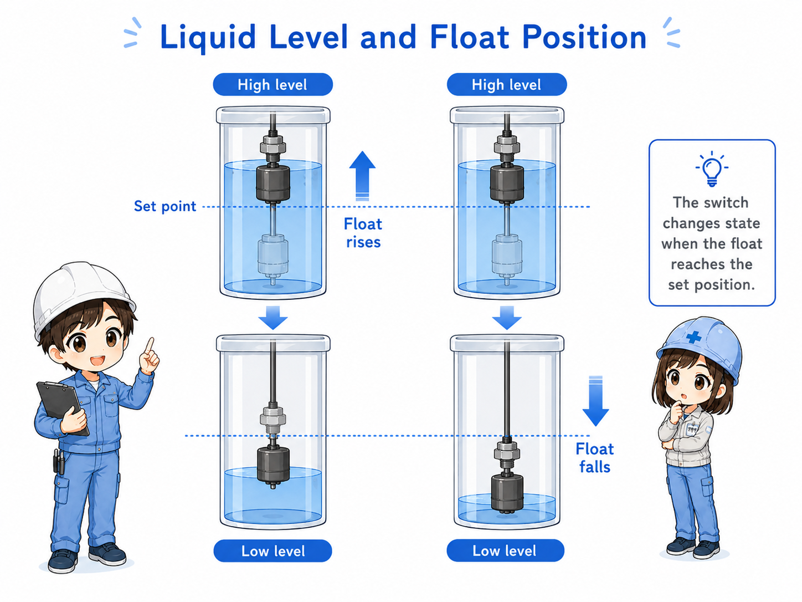
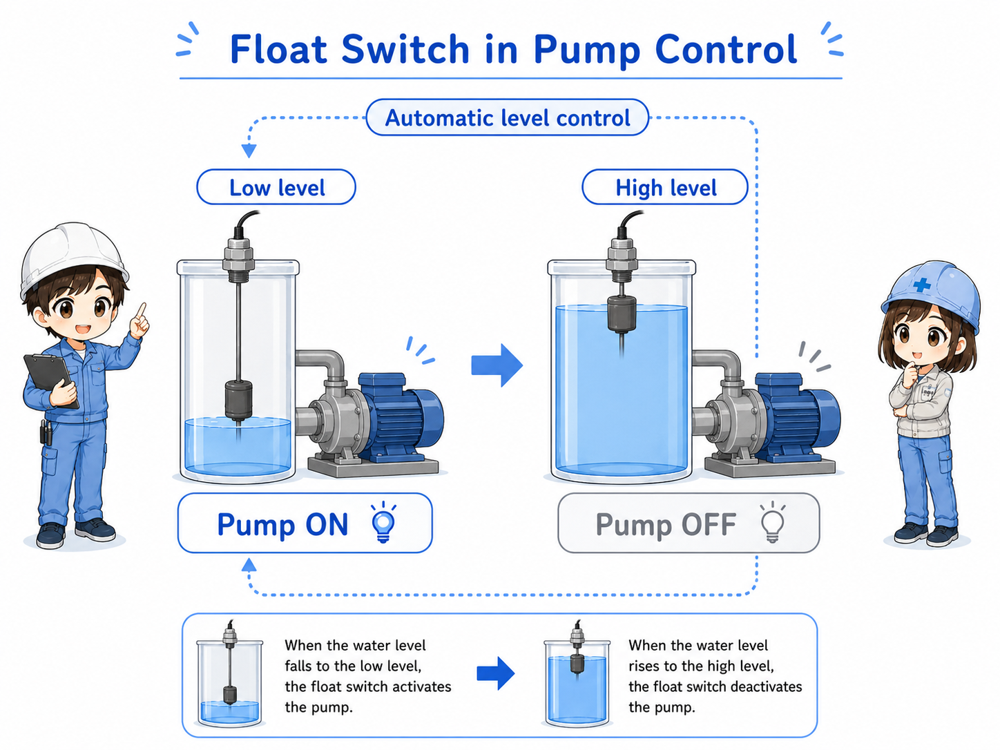
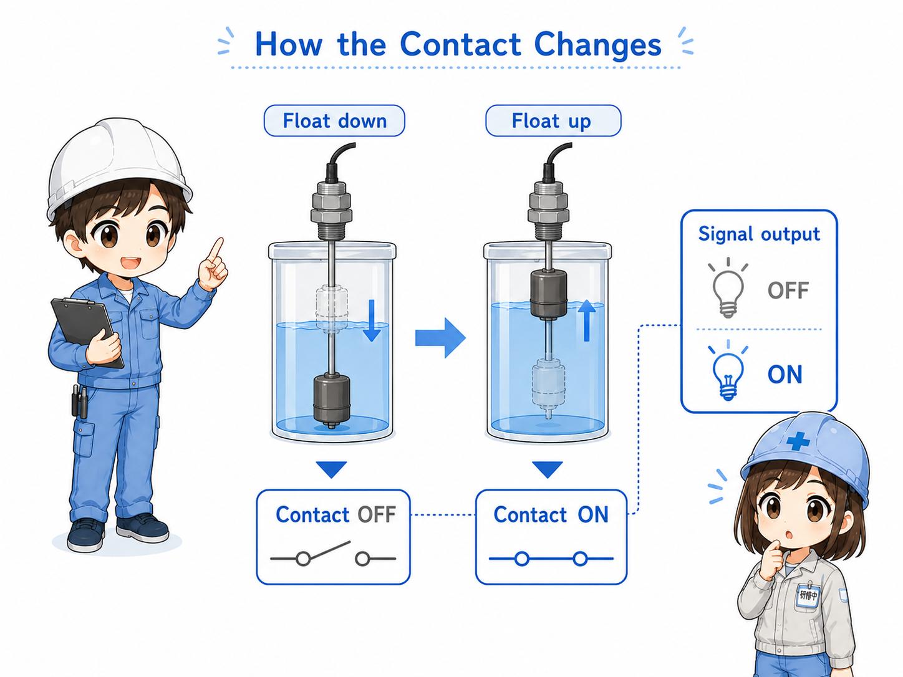
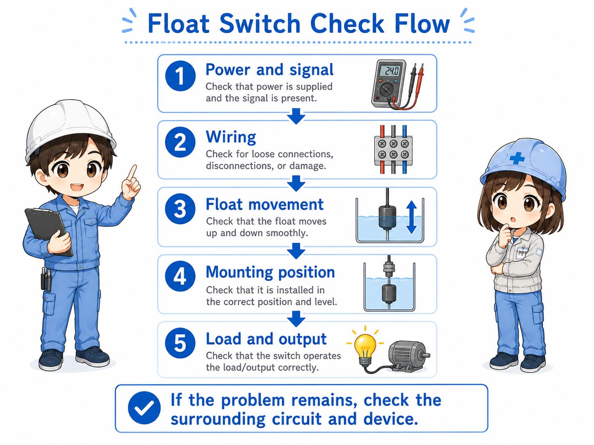

1. Basic idea: a float switch detects liquid level
Think of a float switch as a level-operated contact. When the liquid level moves, the float moves, and the output state changes.
A float switch is installed in or near a tank to detect liquid level. As the liquid rises or falls, the float moves with the surface. That movement changes an internal contact or output signal.
In many control panels, the PLC does not directly measure the liquid height. It receives a simple ON/OFF signal from the float switch and uses that signal for pump operation, alarm logic, or sequence conditions.


The important point is not just “there is a float.” The control system is looking for whether the contact or input changes at the expected level.

So I should check both the real liquid level and the electrical signal, not only one side.
2. How a float switch works
The float moves with the liquid surface. That movement operates a contact or output circuit.
The exact internal structure depends on the model. Some float switches use a mechanical contact. Others use a magnetic reed switch or electronic output. The field-friendly way to understand them is the same: level movement changes the output state.
Depending on the wiring and contact type, the signal may turn ON when the float rises, or it may turn OFF when the float rises. Always confirm the contact action from the actual device marking, wiring diagram, or manual.
1. Level rises or falls
The liquid surface moves inside the tank.
2. Float moves
The float follows the liquid level and changes position.
3. Output changes
The contact or transistor output changes state.

3. Upper-level and lower-level detection
Float switches are often used to detect a high level, a low level, or both.
An upper-level float switch may be used to stop filling, stop a pump, or trigger a high-level alarm. A lower-level float switch may be used to protect a pump from running dry or to start filling when the liquid level becomes low.
| Detection point | Common purpose | Practical check |
|---|---|---|
| Upper level | High-level alarm, fill stop, overflow prevention. | Check whether the float changes state at the high level. |
| Lower level | Low-level alarm, pump protection, refill start. | Check whether the float returns correctly when the level falls. |
| Two-level control | Start and stop control using high and low level points. | Check both switch actions and the PLC logic together. |
Field note
A float switch may be installed for alarm only, or it may be part of automatic pump control. Before troubleshooting, confirm what the switch is supposed to do in that machine.
4. Pump control example
Float switches are often used in simple pump start/stop or empty/full detection circuits.
In a common tank control example, the pump may start when the liquid level becomes high and stop when the level becomes low. In another case, the pump may stop when the tank is full. The exact logic depends on the equipment purpose.
For troubleshooting, it is useful to follow the signal path: float movement, switch contact, wiring, PLC input, then program condition.

Do not change pump logic casually
Float switch logic may protect pumps, tanks, products, or operators. Confirm the machine drawing and the required operation before changing wiring or PLC conditions.
5. Contact output and PLC input
For the PLC, the float switch is usually just one input signal.
The float switch may have a contact output similar to a limit switch or relay contact. In that case, the PLC input only sees ON or OFF. The real liquid level is converted into a contact state before the PLC program uses it.
The same float movement can produce different PLC input behavior depending on contact type, wiring, and program logic. This is why checking NO/NC action and input monitor status is important.

NO or NC action
Confirm whether the contact closes or opens at the detected level.
Input monitor
Check the PLC input LED or monitor screen while moving the float safely.
Common wiring
Check the common line, input terminal, connector, and cable continuity.
Program condition
The input may be inverted or combined with other interlocks in the PLC logic.
6. Field check points
Float switch problems can come from liquid condition, mechanical movement, wiring, or PLC logic.
Before replacing the float switch, check whether the float can move freely. It may be stuck by dirt, scale, foreign material, cable routing, tank wall contact, or incorrect installation angle.
Then check the electrical side. If the switch output changes but the PLC input does not, the cause may be wiring, common, connector, input unit, or program monitoring point.

Safety note
Do not put your hand into tanks or loosen wiring without following site safety rules. Liquid, chemicals, moving equipment, and energized circuits can be dangerous.
7. Common troubleshooting patterns
Most float switch issues become easier when you separate the mechanical side and electrical side.
| Symptom | Possible cause | First check |
|---|---|---|
| Input does not turn ON | Float is not moving, liquid level has not reached the switch, wiring is open, or contact type is misunderstood. | Check actual liquid level, float movement, output state, and PLC monitor. |
| Input stays ON | Float is stuck, liquid remains at detected level, wiring is shorted, or contact is stuck. | Move the float safely and see whether the output changes. |
| Pump does not start or stop | Level signal is missing, program condition is not satisfied, or another interlock is active. | Check the float input and related permissive conditions in order. |
| Alarm appears even though level seems normal | Float position and visible level may not match, or the signal may not reach the PLC. | Compare the actual float position, wiring, input LED, and PLC monitor. |
8. Summary
A float switch is a simple device, but it is often important for pump control and level alarms.
A float switch detects liquid level by moving with the liquid surface and changing an output state. In a control system, that output is used as an input signal for pump start, pump stop, high-level alarm, low-level alarm, or sequence control.
The most important beginner point is to check both sides separately: the physical level and float movement on one side, and the electrical signal and PLC input on the other side.
Remember this
Float switch troubleshooting is not only “replace the switch.” First follow the path: liquid level → float movement → contact output → wiring → PLC input → program condition.
Related articles
These English articles are useful next steps after learning float switches.